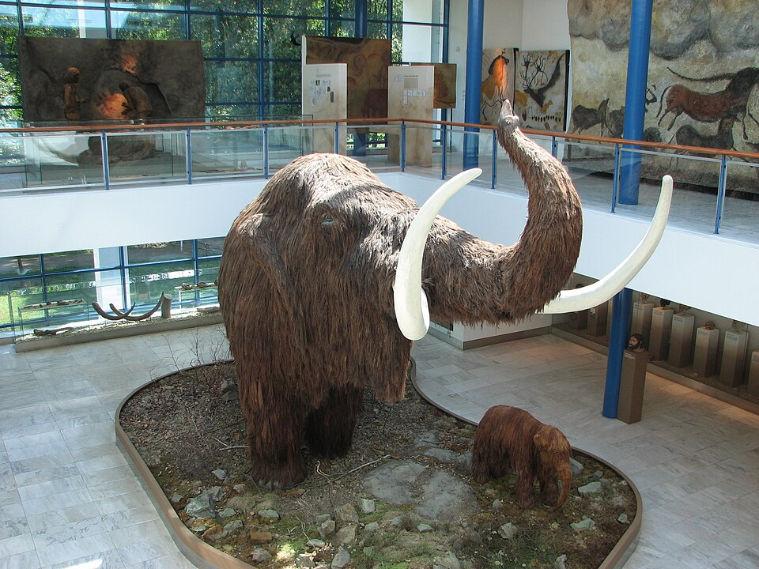
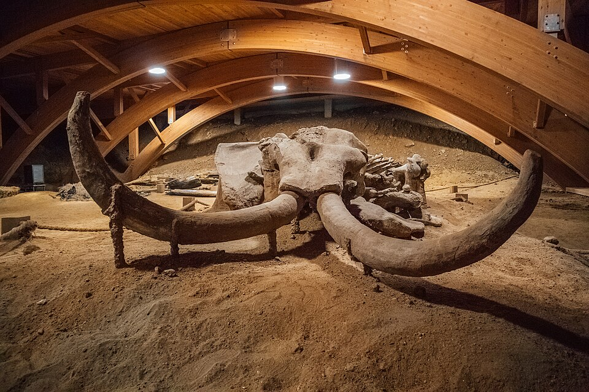
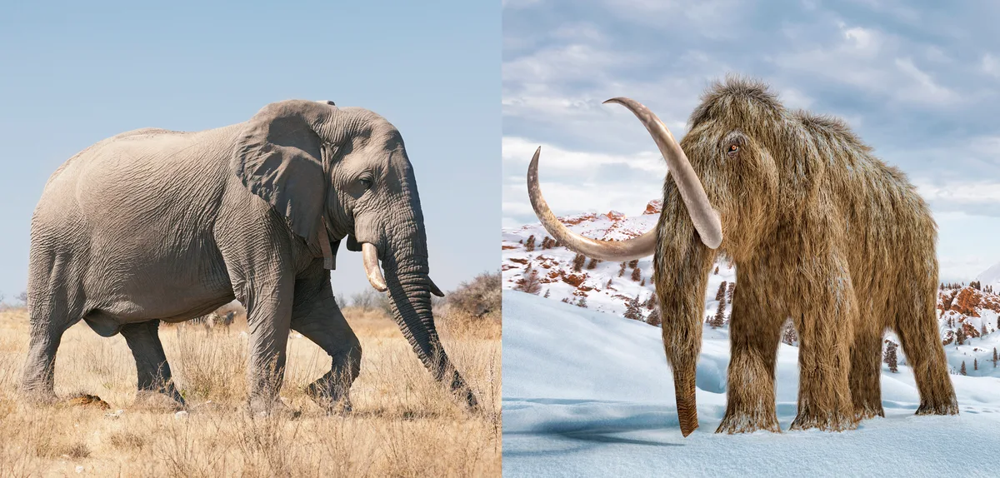
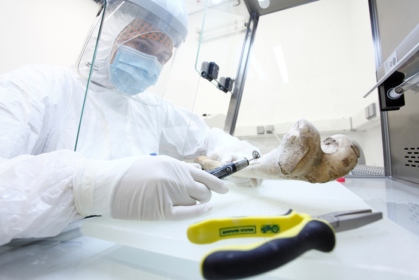
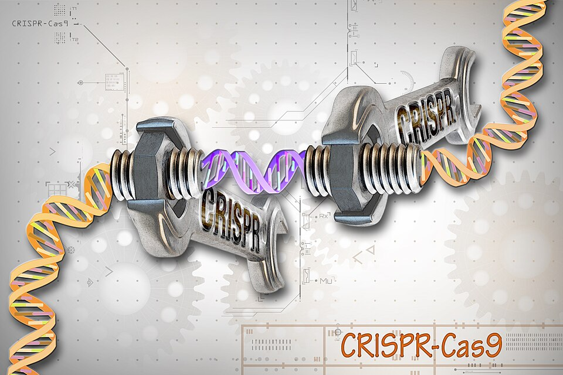
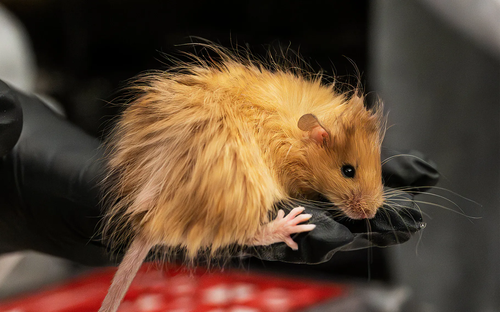
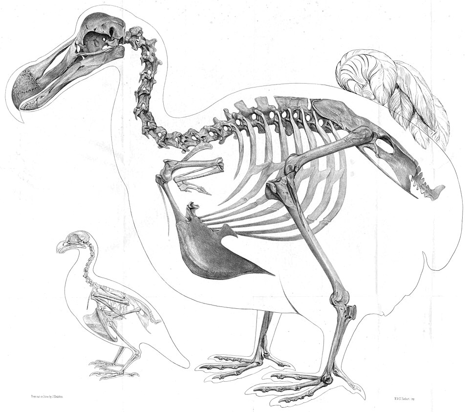
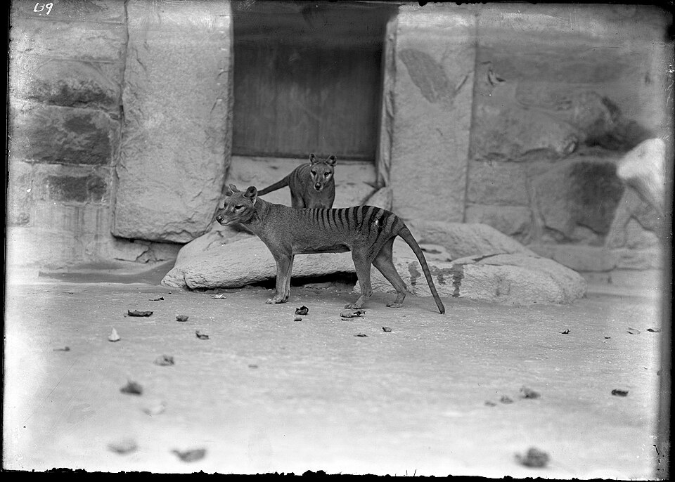
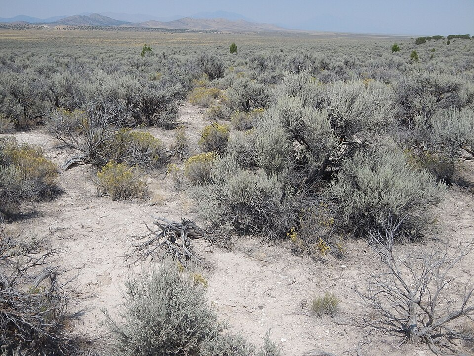

Can Scientists Bring Extinct Animals Back to Life?

Imagine walking across a frozen landscape and seeing a woolly mammoth moving through the snow. For thousands of years, that scene belonged only to the past. Today, advances in ancient DNA, genome sequencing, gene editing and stem-cell biology are making something that once sounded like science fiction a serious scientific question.
But there is an important distinction between bringing an extinct animal back and creating an animal that carries some of its extinct traits. Scientists cannot currently take a perfectly preserved mammoth genome and simply clone an identical mammoth. Ancient DNA is fragmented and damaged, and no living mammoth cells remain. Instead, researchers are investigating whether genetic information recovered from extinct species can be combined with modern biotechnology and the biology of living relatives.
Scientists have not yet recreated a genetically identical extinct animal. What they are developing is a much more complicated approach: reconstructing selected extinct traits using ancient DNA, living relatives and genome engineering.
De-extinction: Are We Really Bringing the Dead Back?
The idea is usually described with one dramatic word: de-extinction. The term refers to attempts to recreate extinct organisms or restore important characteristics of extinct species using modern biotechnology.
The woolly mammoth is one of the most famous examples because mammoths left behind unusually well-preserved remains in permafrost. These remains have allowed scientists to recover genetic material and investigate how mammoths adapted to extreme Arctic environments.

A Mammoth Is More Than Its DNA
The woolly mammoth was closely related to the modern Asian elephant. That evolutionary relationship is extremely important because scientists need a living biological system if they want to investigate whether extinct genetic traits can be recreated.
By comparing mammoth genomes with elephant genomes, researchers can identify genetic differences associated with characteristics such as hair, skin, fat metabolism, immunity and adaptation to cold environments.

Mammoth and elephant evolutionary relationship.

Ancient DNA provides a genetic window into extinct species.
How Could Scientists Create a Mammoth-Like Animal?
There is no single "mammoth button." Instead, researchers would have to overcome several different scientific problems, from recovering ancient DNA to developing a healthy animal.
Mammoth remains preserved in permafrost can contain fragments of ancient DNA. Scientists extract and sequence these fragments, then use computational methods to assemble information about the extinct animal's genome.
The challenge is that ancient DNA is usually damaged, fragmented and chemically altered. Researchers therefore have to distinguish genuine ancient sequences from contamination and reconstruct the genome from incomplete evidence.
Scientists can compare reconstructed mammoth DNA with the genome of living relatives, particularly Asian elephants.
This comparison can reveal genetic differences associated with traits that helped mammoths survive cold environments, including differences involving hair, skin, fat storage, temperature regulation and immune biology.
Technologies such as CRISPR can allow researchers to make targeted changes to DNA in living cells.
In a mammoth-related project, the goal would not necessarily be to change every difference between a mammoth and an elephant. Researchers could instead focus on particular genetic variants associated with useful or recognizable mammoth traits.
But editing DNA is only one part of the problem. A modified cell is not automatically a complete animal.
This is a major biological challenge. Even if researchers successfully introduce mammoth-associated genetic changes into an elephant cell, they still need a reliable reproductive system capable of producing a viable embryo.
Development involves much more than DNA sequence alone. Cellular reprogramming, gene regulation, embryonic development and reproductive biology all have to work together.
A viable embryo would still have to develop into a healthy animal.
Researchers would need to understand whether the resulting animal could grow normally, regulate its body temperature, reproduce, interact socially and live without suffering serious biological problems.
Only after solving these challenges could scientists begin asking the ecological question: where could such an animal actually live?
Step 2: Compare the Mammoth With a Living Relative
Once scientists have genetic information from the extinct species, they can compare it with the genome of a living relative. For mammoths, the Asian elephant is particularly important.
Researchers can search for genetic differences associated with mammoth adaptations. These include changes potentially connected to hair, fat storage, temperature regulation and other biological characteristics.
Step 3: Edit Living Cells
This is where genome-editing technologies such as CRISPR become important.
CRISPR allows researchers to make targeted changes to DNA. In principle, scientists can modify cells from a living relative and introduce selected sequences inspired by an extinct species.
Experimental research has explored editing elephant cells with mammoth-associated genetic sequences. But editing a cell is very different from producing an entire animal.

Step 4: From Edited Cell to Embryo
This may be one of the hardest stages. Suppose scientists successfully modify an elephant cell so that several of its genes resemble mammoth versions. That still does not create a mammoth.
Researchers would need to turn the edited genetic material into a viable embryo and allow that embryo to develop successfully. This brings reproductive biology, embryology and stem-cell research into the picture.
Changing DNA is one problem. Turning a genetically modified cell into a healthy, developing animal is an entirely different problem.
But Would It Actually Be a Woolly Mammoth?
This is where the definition of "de-extinction" becomes important. Imagine researchers create an elephant carrying dozens of carefully selected mammoth-associated genetic changes. Would that animal actually be a woolly mammoth?
Not necessarily. It might be better described as a genetically engineered elephant or a mammoth proxy that reproduces selected characteristics of the extinct species.
The animal would not necessarily possess every genetic feature found in an extinct mammoth. It would also develop within a modern biological and environmental context.
The "Woolly Mouse" Experiment
In 2025, researchers associated with Colossal reported genetically engineered mice carrying multiple genetic changes associated with mammoth-like characteristics. The resulting mice developed noticeably hairier coats.
The experiment attracted attention because it demonstrated how combinations of genetic changes can influence physical traits. But a woolly mouse is not a mammoth.

What About the Dodo and Tasmanian Tiger?
Mammoths are not the only extinct animals being discussed in de-extinction research. The dodo and the thylacine, commonly known as the Tasmanian tiger, are two other frequently discussed examples.

The dodo is one of the species frequently discussed in de-extinction research.

The thylacine is another major target of modern de-extinction research.
Each extinct species creates a different scientific problem. Researchers need ancient genetic information, a suitable living relative, appropriate reproductive biology and a realistic way to translate genetic information into a functioning organism.
Could De-extinction Help Conservation?
Perhaps the most important consequence of this technology may not be resurrecting extinct animals at all.
The same advances in genome sequencing, gene editing and reproductive biology could potentially contribute to conservation of species that are still alive.
Scientists are investigating whether genomic technologies could help restore genetic diversity, understand disease resistance or improve resilience in endangered populations.

Where Would a Resurrected Animal Actually Live?
Imagine that scientists eventually create a healthy mammoth-like animal. The next question would be where to put it.
The world has changed dramatically since mammoths disappeared. Climate, vegetation, ecosystems and human activity are all different.
Introducing a large engineered animal into a modern ecosystem could have consequences that scientists cannot completely predict. Creating the animal would therefore be only the beginning.
And Then Comes the Ethical Question
De-extinction is not purely a genetics problem. It also raises questions about animal welfare, conservation priorities, ecological risk and how humans should use powerful biological technologies.
Overall View
Scientists have already achieved several pieces of the technological puzzle. Ancient DNA can be recovered and sequenced. Extinct genomes can be compared with those of living relatives. Genetic differences associated with extinct traits can be identified. Genome-editing technologies can modify living cells. Stem-cell research is opening new possibilities in reproductive biology.
But none of this means that scientists have recreated a genetically identical woolly mammoth.
The real challenge is connecting every stage: ancient DNA → reconstructed genome → edited cells → viable embryo → healthy animal → functioning ecosystem.
That is why de-extinction is much more scientifically interesting than simply asking whether scientists can "bring a mammoth back."
It is a test of how deeply we now understand genetics, evolution, development and ecosystems.
Perhaps the most valuable outcome of de-extinction will not be seeing a mammoth walk across Siberia again. It may be learning enough from extinct genomes to help prevent today's endangered animals from becoming tomorrow's extinct species.
Scientific Papers & Further Reading
The article above is based on published scientific literature, scientific reporting and conservation resources. The sources below are included so readers can explore the research themselves.